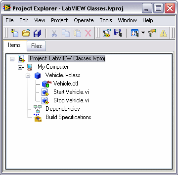
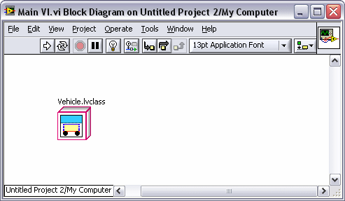

In object-oriented programming, classes represent general traits that items share. You can visualize a class, generically, as a vehicle. Vehicles share common traits and the class defines those traits. An object is a specific occurrence of a class. An object of a vehicle class can be the specific car you drive. The class definition determines how your car, the object, behaves.
A class defines the data and methods associated with an object of the class. Continue to use a vehicle as an example. Many vehicles exist in the world. You can generically classify all types of cars, trucks, and buses as vehicles. Vehicles have doors on the body and gears in the transmission. Information about the number of doors and number of gears in the transmission is data about the vehicle. Vehicles also can accelerate and brake. Accelerating and braking are behaviors, or methods, of the vehicle. The data and methods associated with the vehicle define the class Vehicle. You create classes to define the data and methods of the object. The following image displays the LabVIEW class representation of class Vehicle. LabVIEW stores the data of class Vehicle in Vehicle.ctl and the methods of Vehicle in VIs named Start Vehicle VI and Stop Vehicle VI.

An object is a specific instance of a class. The vehicle that you drive is a specific implementation of class Vehicle, or an object of class Vehicle. The following block diagram of Main VI displays an object of class Vehicle. Objects have data and methods defined by the class. LabVIEW stores class data in a control and you create member VIs that are the methods of the LabVIEW class.

For the purpose of conceptualizing the uses for LabVIEW object-oriented programming, you can differentiate users of LabVIEW classes in the following manner:
The LabVIEW class user does not need to know how to create a LabVIEW class, but rather how to use the data type a class defines in an application, what information is available to them in debugging code that uses LabVIEW classes, and how a new version of the LabVIEW class might affect the application the programmer has built. If you are using LabVIEW classes only and are not developing them, refer to the Using LabVIEW Classes and Interfaces in an Application topic for specific information about using LabVIEW classes another developer provides you.